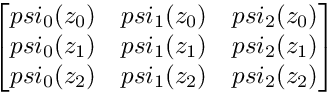
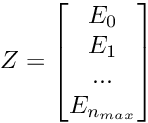
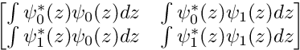

|
Calcul de la densité locale d'un système nucléaire
1
|
Public Member Functions | |
| psiSolution (int) | |
| arma::mat | calculeSolution (const arma::vec &) |
| Calcule les psi-solutions. More... | |
| arma::mat | orthoMat () |
| Vérifie l'orthonormalité des psi-solutions. More... | |
| arma::vec | derivee_seconde (const arma::vec &) |
| Calcule la dérivée seconde de la solution en des points du vecteur. On peut utiliser l'approximation discrète : https://fr.wikipedia.org/wiki/D%C3%A9riv%C3%A9e_seconde_discr%C3%A8te. More... | |
| arma::vec | energyMat () |
| Calcule les niveaux d'énergie pour les solutions psi de l'équation à l'aide de l'équation 1D. More... | |
Public Attributes | |
| int | n_max |
| Jusqu'à quel niveau d'énergie max seront calculés les solutions de l'équation. | |
| arma::mat psiSolution::calculeSolution | ( | const arma::vec & | vecteurZ | ) |
Calcule les psi-solutions.
retourne une matrice à 2 dimensions, contenant les valeurs de psi_i(z) ; La ième colonne correspond aux valeurs de psi_i évalué à une valeur de z différente à chaque ligne; Les valeurs de z sont données par le vecteur [vecteurZ] placé en argument
| vecteurZ | est le vecteur de rééls pour lesquels on possède les valeurs d'évaluation du polynome d'Hermite |

| arma::vec psiSolution::derivee_seconde | ( | const arma::vec & | Z | ) |
Calcule la dérivée seconde de la solution en des points du vecteur. On peut utiliser l'approximation discrète : https://fr.wikipedia.org/wiki/D%C3%A9riv%C3%A9e_seconde_discr%C3%A8te.
| Z | Les points où seront calculés la dérivée seconde |
| arma::vec psiSolution::energyMat | ( | ) |
Calcule les niveaux d'énergie pour les solutions psi de l'équation à l'aide de l'équation 1D.

| arma::mat psiSolution::orthoMat | ( | ) |
Vérifie l'orthonormalité des psi-solutions.
Verifie l'orthonormalité des psi-solutions. On vérifie pour tous les couples n,m <= n_max. On retourne les résultats dans une matrice dont les numéros de lignes et les colonnes correspondent aux valeurs de n et m.
